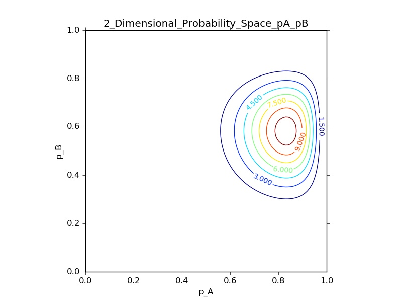
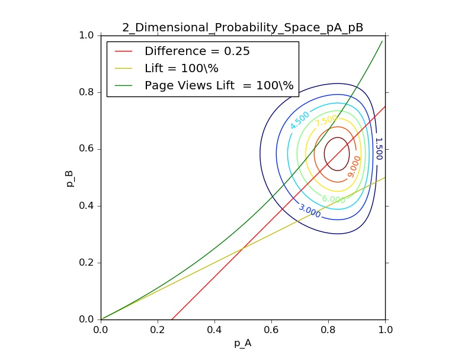
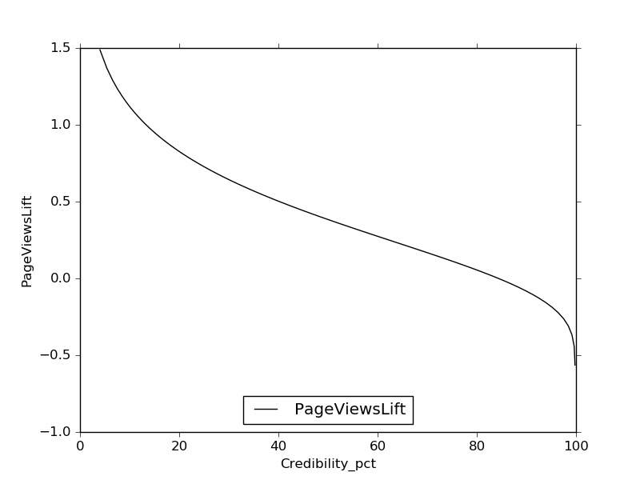
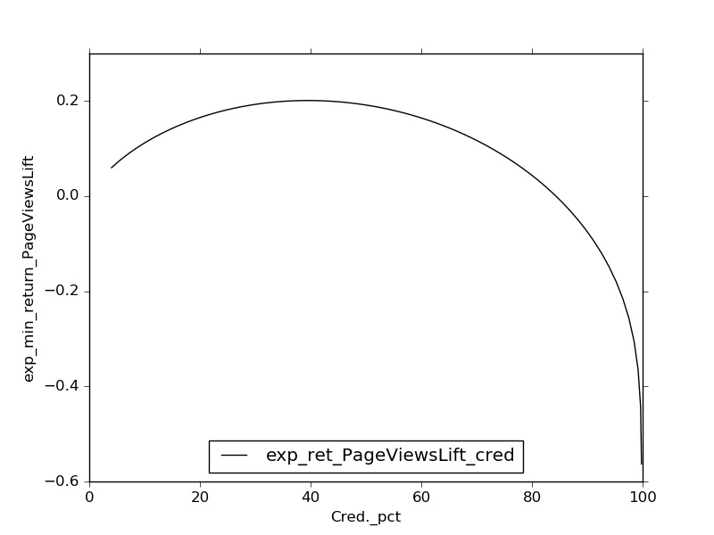

ANALYSIS OF BINARY OUTCOME A/B TESTS - NEW METRICS
Ramesh Subramonian, Ranjeet Tate, Michael Shire, Abhi Singh
As a user of AB tests (Product Managers, Analysts, HiPPOs) or a designer/builder of AB tests
and systems, do you have a nagging feeling that though A was “statistically” better than B, the
difference wasn’t large enough to be important? Do you have doubts about the business impact
of the test outcome? Do you want to just set a business or revenue goal (e.g. 10% better) and
have a definite recommendation made to you instead of dealing with “we are 90% confident that
A is 11.1% better than B”? Do you feel overwhelmed by the “test everything” approach becoming
increasingly prevalent in tech? If you answered yes to any of these questions, then read this blog.
First, we should go beyond simply asking whether “A is better than B” (statistically) to asking
whether “the difference between A and B is important enough to be actionable”1 Consider an
example: The Optimizely book on A/B testing describes a test comparing a page with a static ad
to one with a video2. The variant with the video was better in terms of both click-through and
conversion rates, but the costs of producing the video and displaying it were deemed “too high” to
launch the video version at scale. So in addition to being statistically significant, the difference has
to be important enough to recommend proceeding.
Second, this difference has to be evaluated not in terms of the usual probability but in terms of a
revenue or business metric, which may not be simply related to the measured probability. E.g.,
in order to trigger a recommendation, do we want the difference between success probabilities to
exceed 0.1 —i.e. pA − pB > 0.1— or do we want the success probability to lift by 20% —i.e.
pA > 1.2 ∗ pB? Different metrics will lead to different outcomes. If pB happens to be 0.5, even
though pA has the same value = 0.6 for both a difference of 0.1 and a lift of 20%, the confidence
levels associated with the two propositions can be quite different.3
Third, decision makers do not want to deal with statements about “confidence levels in the differ-
ence”. The goal of our analysis is to provide the test owner with a definite recommendation about
choosing A or B4 based on a single threshold for a pre-selected business metric.
As a collateral benefit, you may find that the requirement of calculating a minimum business gain
before starting a test will magically reduce the number of tests, culling out the more frivolous ones.
1See http://shopperscientist.com/archive/views/28may95.html and http://www.med.
uottawa.ca/sim/data/Statistical_significance_importance_e.htm for lengthier discussions.
2“Fail Fast and Learn”, pg. 79, A/B Testing, Dan Siroker and Pete Koomen, Wiley (2013)
3Note that the choice of comparison metric is an issue that arises only when we want to quantify the comparison.
If we were only interested in whether A is better than B, then any metric (as long as it is monotonic in pA and pB)
would do. The choice of metric becomes important when we are interested not just in whether A is better than B, but
in addition, by how much.
4Paraphrasing from Klugman et al “Loss Models”, 2nd Ed. Wiley (2004), pg. 419: “...the process must end with a
winner. While qualifications, caveats etc. are often necessary, a commitment is required.” on the part of the analyst.
1

We will illustrate our approach to the first three issues by analysing the data for binary outcome
A/B tests, which we briefly describe. In a binary experiment, each trial has only two possible out-
comes, a success (1) or a failure (0). A population being experimented on has a “true” probability
of success p which is to be inferred from the results of the test. In an A/B test there are two pop-
ulations or branches, each of which is exposed to a different treatment. The populations have true
success probabilities pA and pB. After a period of time (pre-determined by “power” calculations or
otherwise), the experiment will yield a count of the trials and successes in each branch, (nA, mA)
and (nB, mB). From this data we infer a function that represents the likelihood of (pA, pB).
We’ve taken a Bayesian approach since it turns out to be much better suited for general metrics. We
use the data from the experiment to construct the posterior probability distribution (or likelihood)
of (pA, pB). See Fig. 1, which shows a contour plot of the likelihood.
Figure 1: Contour Plot of the Likelihood of (pA, pB) for (nA, mA, nB, mB) = (12, 10, 12, 7). The
contours correspond to points of equal probability density. The insides of high-value contour lines
represent regions of high likelihood, with the peak at (10/12, 7/12).
The next issue is that of finding a metric which reflects a business interest. Consider a Binary
A/B test in which the probability being measured is the page transition probability p: that of
moving to any other page on the website as opposed to leaving the website or otherwise ending the
session. The business impact is not proportional to an increase in the page transition probability.
On average, we know that revenue is linear in clicks, conversions or other monetizing actions, and
that the number of such actions is linear in the number of opportunties to act, which in turn is
proportional to the pages visited on the website. How is the number of page visits P V related to
the page transition probability p? Some thought shows that the average number of pages visited
per user-session is
p
P V = p + p2 + p3 + ... =
(1)
1 − p
2

which is simply the odds ratio corresponding to the probability! The same metric can be seen in
a different light: In a personal finance setting, the expected return on a loan is proportional to the
number of loan payments made before a default. If p (related to the FICO score) is the probabiity
of making any single loan payment, then Eq. 1 represents the average number of payments before
default. Since p is close to 1, even a small increase in p leads to a large increase in expected return
on the loan, and a corresponding drop in the APR the lender can afford to offer.
Different metrics (and decision values) define different lines in two-dimensional probability space
{(pA, pB)}. See Fig. 2, where we have plotted the lines defined by a metric value for each of three
metrics: Probability Difference, Probability Lift and Page Views Lift. If we knew pA, pB with
Figure 2: Metric Lines and Likelihood Function on 2D probability Space (pA, pB). The credibility
of a metric is the volume of the likelihood function below the metric line.
certainty, it would be a point in the above probability space. We would then recommend A over B
if the observed point lies below and to the right of the chosen line.
Note however that we do not have a point (pA, pB) that corresponds to our knowledge of the
success probabilities, instead we have the likelihood function, which we have superposed on the
metric lines in the figure above. Thus, we can ask for the (total) likelihood that (pA, pB) lies below
(and to the right of) a specific metric line. This is simply the volume of the likelihood function
below the metric line for M , and is the credibility of the result.
(As we can see from the figure, the different metric lines cut the likelihood function on different
sides of the peak, and so the calculated credibilities will be different and the resulting recommen-
dations can be contradictory.)
So for any value of the metric M we can do a numerical integration to obtain its credibility
3

Cred(M )5. For concreteness, consider experimental results (nA, mA) = (200, 40) and (nB, mB) =
(100, 15). The analysis we’ve described so far provides a Page Views Lift vs. Credibility curve
based on the experimental data, of the form in Figure ??. which as expected is sigmoidal. Thus,
Figure 3: Page Views Lift vs. credibility
we use the data to infer not just which treatment is better, but in addition by how much and how
certain we are of this. In the conventional approach, we would base our recommendation on a
decision criterion like “Page Views Lift of 8% at 95% credibility”, and if the point 95, 0.08) is
below and to the left of the above credibility curve in Figure ?? we would recommend A over B.
However, from the perspective of an expected business return, this process is ambiguous. Specifi-
cally, the above decision point lies above the curve and so “A is not better than B”. But the decsiion
point also corresponds to an expected return of 0.08 ∗ 0.95 = 0.075, which is equivalent to a “Page
Views Lift of 10% at 75% credibility”, which does lie below the credibility curve and thus implies
a recommendation of “A is better than B”. This still does not help either us or the HiPPO, who
furthermore wants to express her or his decision criterion as a single value of expected return.
Our approach to resolving this conundrum is to interpret M ∗ Cred(M ) as the expected minimum
value of M . We plot this as a function of the credibility in Figure ??. This expected minimum value
has a maximum. The question of what recommendation to make is then reduced to comparing the
experimentally determined maximum expected minimum value to the test owner’s single value
MExpected for an expected return: if the max-min is lower than the MExpected then the variant is not
better than the control. Conversely,
If Max(Expected MinimumM ) > MExpected, then
we
recommend
A
over
B.
5We analytically reduce the double integral involved to 1 dimension, and then do a cute trick that allows for an
easy numerical integration.
4

Figure 4: Expected Minimum Page Views Lift vs. Credibility
To summarize, we’ve shown two reasons to go beyond the “Is A better than B?” approach to AB
testing: One, we have to take the importance of the difference between A and B into account,
and two, we have to quantify the difference in terms of a business goal. Further, our approach
allows the test owner to establish a single metric and value as a decision criterion and our analysis
provides a simple “A/B” recommendation, without any “confidence levels” clouding the issue.
5